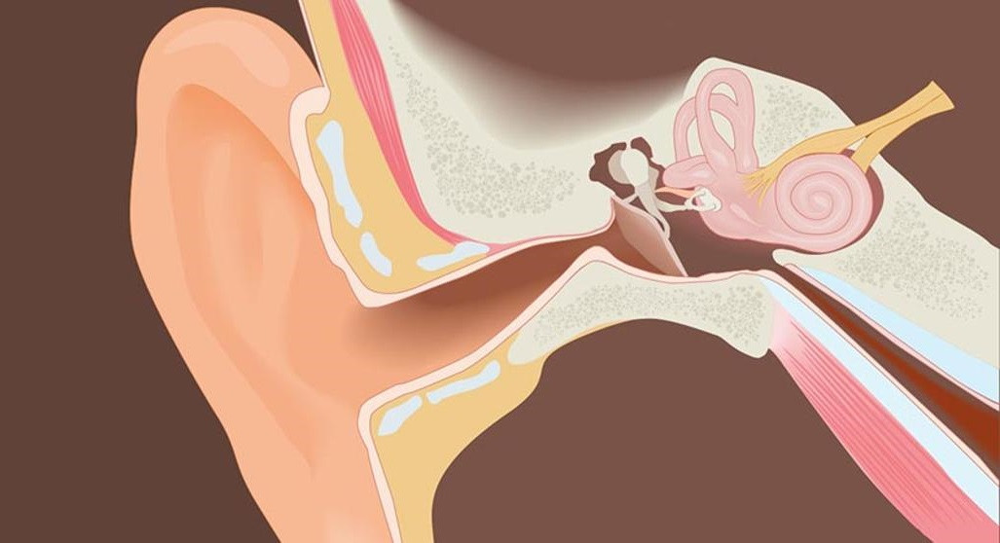
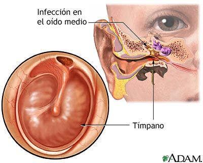

Problemas auditivos
Problemas Auditivos, un problema que nos llegara a todos tarde o temprano. El problema aqui es que cada vez vamos avanzando mas en la tecnologia y cada vez mas nos aventuramos en este grandioso mundo pero aveces no miramos las consecuencias.
Los audifonos:
Un invento maravilloso, que cada dia va evolucionando cada vez mas y con el tiempo estaran en los oidos de todas las personas. Pero asi como este grande invento nos genera muchas satisfacciones y nos ayuda a tener espacios de escucha maravillosos para nosotros mismos, tambien nos esta generando un problema aun mas grave si no sabemos utilizarlos.
Los audifonos seran la causa principal que va a generar problemas auditivos a muchas personas en el futuro, ya que, asi como nos brindan y ayudan, su mal uso nos genera complicaciones muy graves en nuestra salud auditiva ya que en concreto, esto ocurre porque los auriculares en general, y más especialmente los de tipo tapón, producen un deterioro de las células ciliadas, que están situadas en el órgano de Corti dentro de la cóclea del oído y son las encargadas de transmitir las señales al cerebro.
En resumen te vas a quedar sordo amigo/a por subir en exceso el volumen.
Algunas de las principales causas de la Perdida de Audicion
Entre las causas mas comunes de a pérdida de audición puede deberse a:
La pérdida auditiva genética es una pérdida de la audición relacionada con los genes. Las mutaciones genéticas pueden causar pérdida de audición de diversas maneras.
Asimismo, los factores genéticos son la causa de que algunas personas sean más propensas a padecer una pérdida auditiva que otras.
Sus genes les hacen ser más vulnerables a la pérdida de audición por envejecimiento o inducida por ruido, fármacos o infecciones. Se estima que la causa de la pérdida de audición por envejecimiento es genética en un 35-55%.

Durante la gestación, los cambios abruptos que vive el organismo materno, debido al incremento en la producción de estrógenos y progesterona, pueden provocar que el mismo sistema inmunológico de la madre se ataque y se desarrolle la hipoacusia súbita.
La pérdida súbita de audición neurosensorial (“oído interno”), comúnmente conocida como sordera súbita, se produce como una pérdida rápida e inexplicable de la audición, ya sea de pronto o en el transcurso de unos días.

Las infecciones que pueden provocar sordera son diversas y se exponen a continuación:
Infecciones víricas, como el citomegalovirus, sarampión, parotiditis (paperas) o rubéola.
Infecciones bacterianas como la meningitis.
Infección aguda de oído (otitis media aguda).
Infección crónica del oído (otitis media crónica).

Otitis media se refiere a la inflamación del oído medio. Cuando la infección ocurre esta condición es llamada “otitis media aguda”. La otitis media aguda ocurre cuando un resfrío, alergia o infección de las vías respiratorias superiores y la presencia de bacterias o virus llevan a la acumulación de pus y moco detrás de la membrana timpánica bloqueando la trompa de Eustaquio. Esto causa dolor de oído e hinchazón.
Con el pasar del tiempo, escuchar sonidos fuertes a altos niveles de dB puede causar pérdida auditiva u otros problemas de audición como un zumbido permanente en los oídos. Cuanto más fuerte sea un sonido, y cuanto más tiempo usted esté expuesto a él, más probable será que dañe su audición. Cuanto más frecuentemente esté expuesto a los sonidos fuertes a lo largo del tiempo, más daño ocurre.
Los medicamentos ototóxicos son aquellos fármacos que tienen en su composición agentes que pueden ser perjudiciales para nuestros oídos. Algunos medicamentos producen una pérdida de audición temporal, es decir, una vez se abandonan, la capacidad auditiva se recupera con normalidad. Sin embargo, también existen fármacos cuya ototoxicidad puede causar una pérdida auditiva permanente provocando un daño irreversible en el oído interno.
A medida que usted envejece, las estructuras dentro del oído comienzan a cambiar y sus funciones disminuyen. La capacidad para captar los sonidos disminuye. También puede presentar problemas para mantener el equilibrio cuando se sienta, se para o camina.
Y estas fueron las principales causas por las cuales algun dia podras sufrir de problemas auditivos.